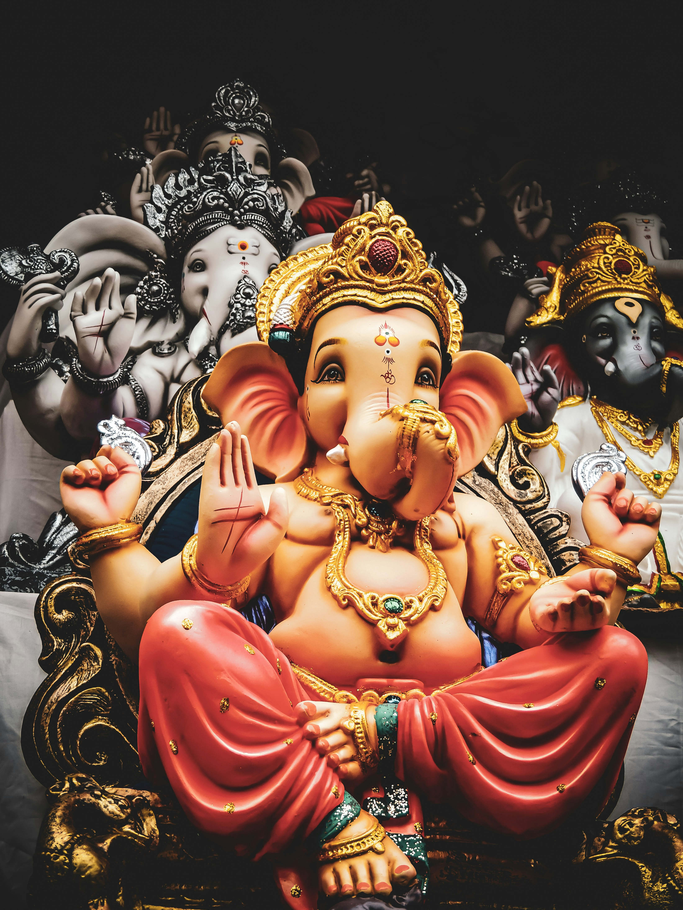
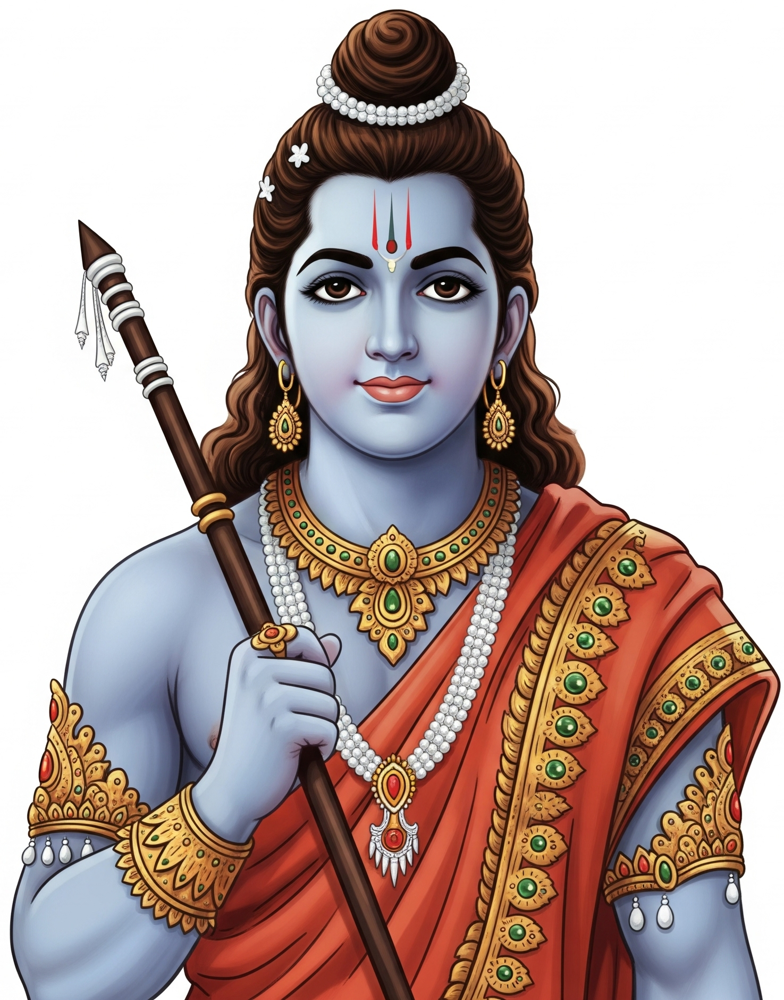
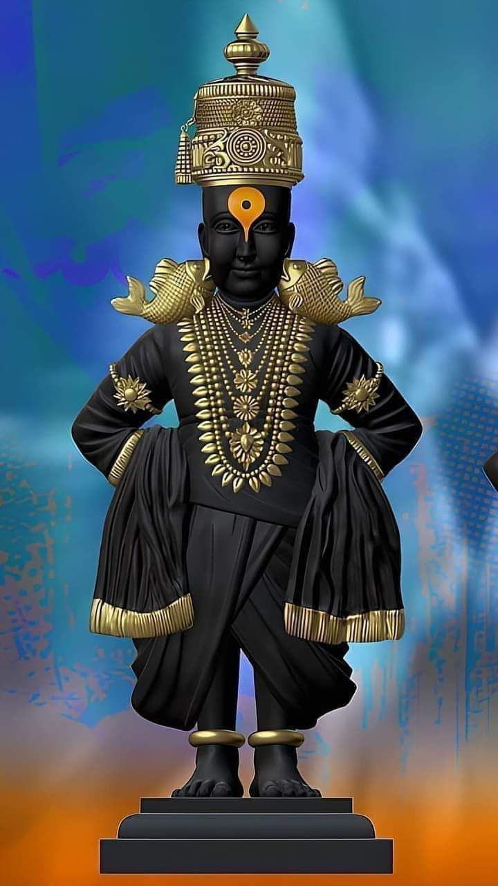

Lord Shiva, one of the principal deities in Hinduism, is known as the Destroyer in the holy trinity
(Trimurti) alongside Brahma and Vishnu. He symbolizes both destruction and regeneration, representing the
eternal cycle of creation, preservation, and dissolution. Depicted with a third eye, a crescent moon, and
the river Ganga flowing from his matted hair, he is also known as Neelkanth for consuming poison during the
Samudra Manthan. Residing on Mount Kailash with his consort Parvati and sons Ganesha and Kartikeya, Shiva is
revered as the god of meditation, yoga, and cosmic dance (Nataraja), embodying supreme consciousness and
inner stillness.

Lord Ganesha
Lord Ganesha, also known as Ganapati or Vinayaka, is one of the most beloved and widely worshipped deities
in Hinduism. He is the son of Lord Shiva and Goddess Parvati and is easily recognized by his
elephant
head, large ears, and pot-bellied human body, symbolizing wisdom, strength, and abundance. Known
as the Remover of Obstacles, Ganesha is invoked at the beginning of new ventures, ceremonies, and
journeys. He is the god of intellect, learning, and beginnings, and is often seen holding a modak
(sweet) in one hand and a broken tusk in another, symbolizing sacrifice and creativity. His mount, a
tiny mouse (Mushika), represents humility and the ability to overcome even the smallest challenges.
Ganesha embodies both worldly success and spiritual wisdom, making him a universally cherished figure across
all sects of Hinduism.
Lord Krishna
Lord Krishna is one of the most revered and divine figures in Hinduism, known as the eighth avatar of
Lord Vishnu. He is celebrated as a god of love, compassion, wisdom, and dharma. Born in
Mathura to Devaki and Vasudeva, Krishna's childhood was spent in Vrindavan, where his
playful acts
(leelas),including stealing butter and playing the flute for the gopis, won him deep affection. He is the
slayer of
evil king Kans and the protector of dharma. As a central figure in the Mahabharata, Krishna served
as the charioteer and guide to Arjuna, delivering the Bhagavad Gita, a timeless spiritual discourse
on duty, righteousness, and devotion. He is often portrayed with a flute, a peacock feather on his
head, and a charming smile, symbolizing divine joy and attraction. Krishna is worshipped as a complete
god—both childlike and wise, playful yet profound—representing the eternal bond between the soul and the
divine.
Lord Vishnu
Lord Vishnu is regarded as the Preserver and Protector of the universe in Hinduism’s Trimurti (alongside
Brahma and Shiva). He maintains the cosmic order (dharma) and incarnates on Earth in various forms (avatars)
whenever evil overpowers good. Among his most famous avatars are Rama, Krishna, Narasimha, and Vamana.
Vishnu is typically depicted with a serene face, blue complexion, and four arms holding a conch (shankha),
discus (chakra), mace (gada), and lotus (padma). He rests on the cosmic serpent Shesha in the ocean of milk,
with his consort Goddess Lakshmi, the goddess of wealth, at his feet. Vishnu symbolizes infinite compassion
and divine sustenance, and his worship emphasizes surrender, devotion (bhakti), and righteous action.
Lord Brahma
Lord Brahma is the Creator in the Hindu trinity known as the Trimurti, which includes Vishnu the
Preserver and Shiva the Destroyer. He is credited with creating the universe, time, and all living
beings. Brahma is typically depicted with four heads, each reciting one of the four Vedas, and
seated on a lotus emerging from the navel of Lord Vishnu, symbolizing the birth of creation. He holds
sacred items like a water pot, prayer beads, book, and lotus, and rides a swan (Hamsa), which
represents wisdom and the ability to discern right from wrong. Unlike other gods, Brahma has very few
temples, the most famous being in Pushkar, Rajasthan, due to various legends explaining why his
worship declined. Despite this, he remains a vital figure in Hindu cosmology as the source of all life and
knowledge. His presence emphasizes the cyclical nature of creation, reminding us that the universe is
born, sustained, and ultimately dissolved in a divine process.

Lord Rama
Lord Rama is the seventh avatar of Lord Vishnu and is revered as the embodiment of truth,
righteousness (dharma), and ideal conduct. He is the central figure of the epic Ramayana, where he is
portrayed as the perfect son, husband, king, and warrior. Born in Ayodhya to King Dasharatha and Queen
Kaushalya, Rama willingly accepted a 14-year exile to uphold his father's promise, showcasing his deep
commitment to duty and sacrifice. During this exile, he defeated the demon king Ravana to rescue his
wife Sita, with the help of loyal allies like Hanuman and Lakshmana. Rama's reign, known as
Rama Rajya, symbolizes just and benevolent governance. Worshipped for his unwavering morality,
compassion, and courage, Lord Rama inspires millions to live a life of virtue, devotion, and honor. Temples,
stories, and festivals like Ram Navami and Diwali celebrate his legacy as the divine ideal of
humanity.
Lord Indra
Lord Indra is the king of the Devas (celestial beings) and the ruler of Swarga (heaven) in Hindu
mythology, primarily known as the god of rain, thunder, lightning, and war. He wields the powerful
weapon Vajra (thunderbolt) and rides the majestic white elephant Airavata, symbolizing strength and
authority. As a prominent figure in the Rigveda, Indra is celebrated for slaying the demon Vritra,
who had blocked the rivers, thus releasing water and restoring cosmic order. While once considered the chief
deity in early Vedic times, his role gradually became more secondary in later Puranic literature, where he
is sometimes portrayed with human flaws like pride and jealousy. Despite this, he remains a guardian of
dharma and a protector of the divine realms. Indra governs the eastern direction and is invoked for
rain, fertility, and victory in battles. His presence reminds devotees of the power of nature, the
importance of humility, and the responsibility that comes with leadership and divine duty.
Goddess Parvati
Goddess Parvati is the gentle, nurturing, and compassionate form of the Divine Mother and the consort of
Lord Shiva, representing love, fertility, harmony, and devotion. She is the daughter of the mountain king
Himavan and queen Mena, and her deep penance to win Shiva's love is a symbol of unwavering dedication and
inner strength. Parvati is the mother of Lord Ganesha and Kartikeya, embodying both maternal warmth and
the power of Shakti—the divine feminine force that sustains the universe. While she is calm and benevolent
in her primary form, she also manifests as powerful goddesses like Durga and Kali when the balance of
dharma is threatened. Parvati is often shown seated beside Shiva, symbolizing the perfect balance of
energy—masculine and feminine, destruction and creation. Worship of Parvati encourages grace, patience,
inner strength, and spiritual wisdom, reminding devotees of the transformative power of love and devotion.
Goddess Kali
Goddess Kali is a fierce and transformative form of the Divine Mother, symbolizing the power of time,
death, and spiritual liberation. She is often depicted in a terrifying form—dark-skinned, with wild hair,
a garland of skulls, blood-red tongue, and standing atop Lord Shiva—yet she embodies the deepest compassion
and maternal love. Kali's appearance represents the destruction of ego, illusion, and evil, clearing the
path for truth and enlightenment. She is not a goddess of chaos but of profound inner change, fiercely
cutting away attachments and negativity. Despite her fearsome image, she is deeply protective of her
devotees, often granting them strength, fearlessness, and moksha (liberation). Worshipped especially in
Bengal during Kali Puja, she is a central figure in Tantra and Bhakti traditions. Kali teaches that
death is not an end, but a transformation, and that true freedom comes only when we surrender the false self
to the divine.
Goddess Durga
Goddess Durga is a powerful and divine form of Shakti, the universal mother and supreme feminine energy
in Hinduism, known for vanquishing evil and restoring balance in the cosmos. She is most famously depicted
riding a lion or tiger, with multiple arms holding weapons gifted by the gods, symbolizing her role
as a fearless warrior and protector. Durga emerged to defeat the buffalo demon Mahishasura, representing
the triumph of good over evil, and this event is celebrated during the grand festival of Navratri.
Though fierce in battle, she is also a compassionate and nurturing mother who cares deeply for her devotees.
She embodies qualities of courage, wisdom, strength, and unconditional love, inspiring both spiritual
and worldly strength. Durga's various forms, such as Kali, Parvati, and Ambika, reflect her dynamic
nature—from calm and loving to wrathful and justice-seeking. Worship of Durga encourages inner empowerment,
moral courage, and devotion to righteousness.
Lord Narasimha
Lord Narasimha is the fierce and protective fourth avatar of Lord Vishnu, who manifested in a unique
form—half-man and half-lion—to uphold dharma and destroy evil. He appeared to save his devoted follower
Prahlada from his tyrannical father Hiranyakashipu, who had received a boon that made him nearly
invincible. To bypass the boon, Narasimha emerged from a pillar at twilight, neither fully man nor animal,
killed the demon with his claws (not weapons), and did so on a threshold—fulfilling all conditions
creatively. Depicted with a lion's head, sharp claws, and a human torso, Narasimha embodies the divine power
that intervenes when righteousness is threatened. Though terrifying in form, he is a symbol of divine
justice, protection, and unconditional grace for those who are devoted. Worship of Narasimha offers
strength, protection from fear and enemies, and liberation from karmic suffering, making him a beloved form
among Vishnu's avatars.
Shanidev
Shanidev, also known as Lord Shani, is the powerful deity who governs the planet Saturn and is considered
the god of karma, justice, and discipline in Hindu belief. He is the son of Surya (the Sun God) and
is often portrayed as a dark-complexioned figure riding a crow or vulture, holding a sword, arrow, or
mace. Shanidev is known to reward or punish individuals strictly based on their actions, making him both
feared and respected. He is associated with hardships, delays, and challenges, especially during periods
like Sade Sati and Shani Mahadasha, which test one's patience and character. However, his influence
also brings deep spiritual growth, humility, and eventual rewards for sincere efforts and honesty. Worship
of Shanidev, especially on Saturdays, includes lighting sesame oil lamps and chanting Shani mantras to seek
relief and blessings. Despite his stern nature, Shanidev is a **divine teacher, reminding us that
righteousness, perseverance, and truth always lead to liberation and peace.
Lord Hanuman
Lord Hanuman is a revered deity known for his unmatched strength, unwavering devotion, and heroic spirit,
primarily worshipped as the greatest devotee of Lord Rama. Born to Anjana and blessed by the wind god Vayu,
Hanuman possesses immense power, the ability to fly, and shape-shifting skills. In the Ramayana, he plays a
crucial role in locating Sita, burning down Lanka, and bringing the Sanjeevani herb to save Lakshmana,
symbolizing selfless service and courage. He is depicted as a monkey-faced figure holding a mace and
sometimes a mountain, embodying humility, loyalty, and fearlessness. Devotees worship him for protection,
strength, and spiritual wisdom, often reciting the Hanuman Chalisa to gain his blessings and ward off evil.

Vitthal
Lord Vitthal, also known as Vithoba or Panduranga, is a beloved form of Lord Vishnu or Krishna,
primarily worshipped in the state of Maharashtra, especially in Pandharpur, which is his main
pilgrimage site. He is depicted as a dark-skinned deity standing with hands on hips, symbolizing patience,
protection, and readiness to help his devotees. Vitthal is deeply associated with the Bhakti movement,
particularly through saints like Sant Tukaram, Dnyaneshwar, Namdev, and Eknath, who spread his
message of devotion, equality, and love for God beyond caste and class. Devotees affectionately call him
“Mauli” (mother-like), reflecting his loving and approachable nature. His worship is centered around
heartfelt devotion (bhakti), chanting, and pilgrimage, especially during the Ashadhi and Kartiki
Ekadashi yatras, when millions walk barefoot to Pandharpur singing abhangas (devotional songs). Lord
Vitthal represents divine love, humility, and the path of pure devotion, offering spiritual refuge to
all, regardless of social status.
Sai Baba
Sai Baba of Shirdi was a revered saint and spiritual master who lived in Maharashtra in the late 19th and
early 20th centuries, worshipped by both Hindus and Muslims. Known for his simple life and profound
teachings, he emphasized faith (shraddha), patience (saburi), compassion, and the unity of all
religions, often saying “Sabka Malik Ek” (One God governs all). Sai Baba performed many miracles,
including healing the sick and offering divine guidance, drawing countless devotees. His legacy continues
through the famous Shirdi temple, where millions seek his blessings, seeing him as a symbol of divine love,
humility, and spiritual oneness.
Aai Tulja Bhavani
Goddess Tulja Bhavani is a fierce and powerful form of Adi Shakti, deeply revered in Maharashtra as the
Kuldevi of many families, including that of Chhatrapati Shivaji Maharaj. She is worshipped as a protector of
righteousness and the destroyer of evil, often depicted with eight arms riding a lion and slaying the demon
Mahishasura. Her main temple in Tuljapur is one of the most important Shakti Peethas and attracts countless
devotees. Bhavani is both a warrior goddess and a compassionate mother who grants strength, courage, and
protection. She is believed to have blessed Shivaji Maharaj with a divine sword, symbolizing her role in
upholding dharma and empowering her devotees in times of need.